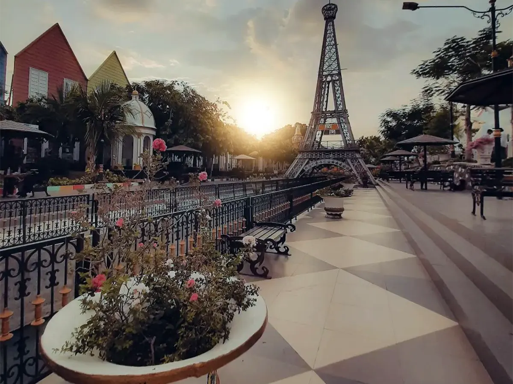

Jember
Selamat datang di halaman Jember. Di sini Anda bisa menemukan informasi singkat tentang destinasi, kuliner, dan kegiatan menarik di Jember.
Destinasi Wisata Populer di Jember
| Foto | Nama Tempat | Keterangan | Lokasi |
|---|---|---|---|
|  | Papuma Beach | Pantai berpasir putih dengan batu karang besar dan ombak tenang. Cocok untuk menikmati sunset, berfoto, dan bersantai di tepi laut. | Buka Maps |
 |
Teluk Love | Teluk berbentuk hati yang menjadi ikon romantis di Jember. Dikelilingi tebing hijau dan cocok untuk menikmati panorama laut dari ketinggian. | Buka Maps |
|
Taman Botani Sukorambi Jember | Taman edukasi dan rekreasi yang menawarkan koleksi tanaman, kolam renang, area bermain, dan wahana outbound. Cocok untuk wisata keluarga dan pelajar. | Buka Maps |
|
Tiara Jember Park Waterboom | Taman rekreasi air yang populer di Jember, menawarkan berbagai wahana permainan air seperti kolam arus, seluncuran tinggi, dan area bermain anak. | Buka Maps |
|
Bukit Samboja | Bukit dengan pemandangan alam yang indah dan udara sejuk. Cocok untuk hiking ringan, camping, dan menikmati sunrise dari atas bukit. | Buka Maps |
Kembali ke Daftar Destinasi